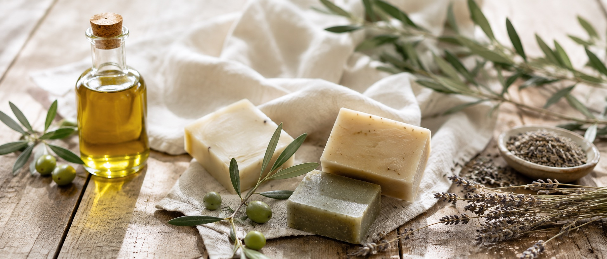
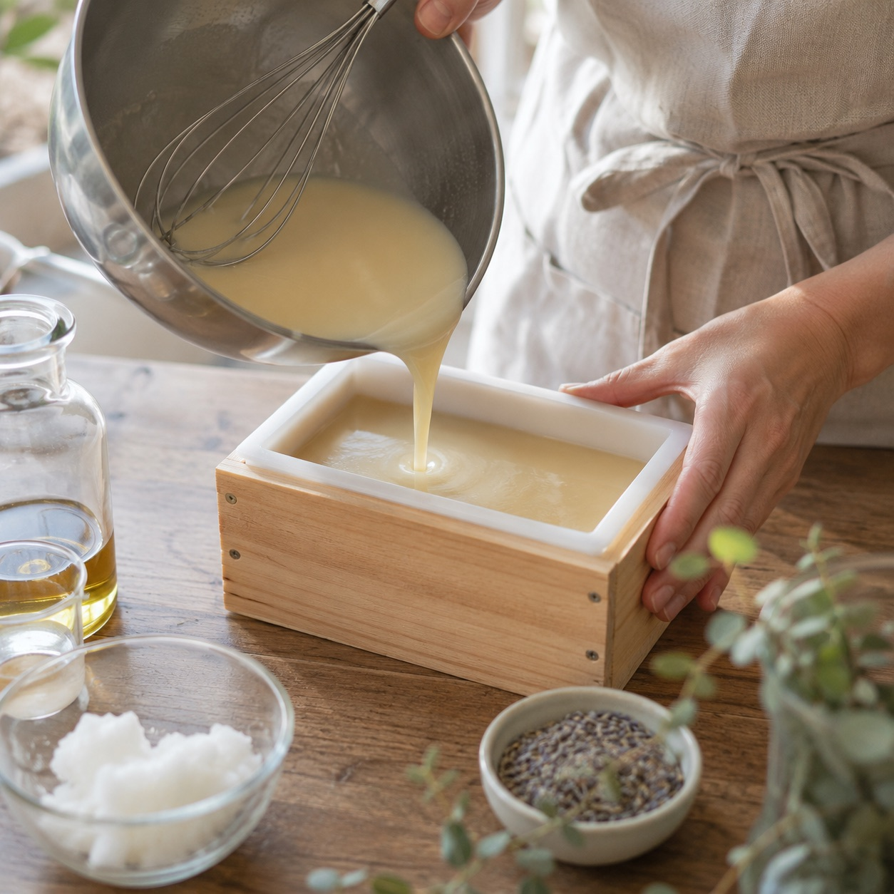

商品
定番の3種類

オリーブ石鹸
香料を加えていない、無香料のタイプです。
1個 1,200円
ハーブ石鹸
自家栽培のハーブを練り込んだ、さわやかな香り。
1個 1,400円
ギフトセット
3種類を少しずつ試せる、はじめての方向けのセット。
1箱 3,200円
配合量まで含めて、すべての成分をパッケージとこのサイトに載せています。
工房の様子や作る工程を、そのまま発信しています。都合の悪いところも見せます。
すべての肌に合うとは言いません。心配な方には、事前のパッチテストをおすすめしています。
香料を加えていない、無香料のタイプです。
1個 1,200円自家栽培のハーブを練り込んだ、さわやかな香り。
1個 1,400円3種類を少しずつ試せる、はじめての方向けのセット。
1箱 3,200円
大量生産では難しい、素材へのこだわりを大事にしたくて、この工房を始めました。派手な宣伝より、使った人の「よかった」という一言を信じて作っています。